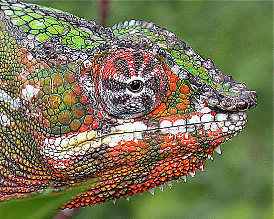

KERNEL
PROCESSING & SOFTWARE - P5.JS
En la presente publicación se expone la forma en que se aplican los diferentes tipos de convolución en el procesamiento de imágenes, por medio de cálculos matemáticos realizados a cada uno de los pixeles y a los que lo rodean en su vecindario.
El siguiente programa realiza la multiplicación de cada uno de los píxeles circundantes con una matriz llamada kernel o núcleo, como se vio en la documentación KERNEL (image processing) , que contiene diferentes valores predeterminados para aplicar correctamente las diferentes máscaras de convolución. El resultado de cada una de estas multiplicaciones se suman y este valor final es asignado a cada uno de los componentes RGB del nuevo píxel.
También es importante resaltar la gran importancia de la implementación de las máscaras de convolución ya que muchas de ellas son utilizados en la medicina para detectar cambios importantes o anomalías que no deberían tener el cuerpo, por ejemplo podemos rescatar la máscara de convolución de Frei-Chen, Robinson y Kirsch utilizadas para la detección de cambios en las propiedades de un material, discontinuaciones en la superficie, entre otras más, como se profundiza en la DOCUMENTACIÓN.
Comandos
| Tecla | Operación | Kernel (Núcleo) | |
|---|---|---|---|
 |
Identidad |  |
 |
 |
Acentuar los bordes |  |
 |
 |
Repujado |  |
|
 |
Detección de bordes |  |
 |
 |
Detección de bordes |  |
|
 |
Detección de bordes |  |
 |
 |
Enfocar |  |
|
 |
Desenfoque de cuadro(normalizado) |
 |
 |
 |
Desenfoque gaussiano 5 × 5(aproximación) |
 |
|
Máscara de desenfoque 5 × 5(sin máscara de imagen) |
 |
 |
|
| Operador de Sobel |  |
 |
|
| Operador de Prewitt |  |
 |
|
| Operador de Frei-Chen |  |
||
 |
Operador de Robinson |  |
|
 |
Operador de Kirsch |  |
p5*js Code
var w = 60;
var K= 2;
var lienzo_01;
var lienzo_02;
var img_01;
var img_02;
let matrixsize = 3;
var matrix = [ [ 0, 0, 0 ],
[ 0, 1, 0 ],
[ 0, 0, 0 ] ];
var title = 'IDENTIDAD';
function setup() {
var myCanvas = createCanvas(1000, 600);
myCanvas.parent('masksImg');
background(210);
pixelDensity();
img = loadImage('https://cors-anywhere.herokuapp.com/https://www.discovertravelnews.com/wp-content/uploads/2020/07/Moscu_San-Basilio-1300x731.jpg');
textSize(18);
stroke(255,255,128);
textStyle(BOLDITALIC);
textAlign(CENTER);
}
function draw() {
drawImage();
image(img, 12, 12, img.width * (250 / img.width), img.height * (250 / img.width));
text(title, width/2, 20);
}
// Dibuja la imagen de la Derecha
function drawImage() {
img.resize(width,height * 1.05)
loadPixels();
img.loadPixels();
let imgcopy = createImage(img.width, img.height);
imgcopy.loadPixels();
for (let x = 0; x < width; x++) {
for (let y = 0; y < height; y++ ) {
let c = convolution(x, y, matrix, matrixsize, img);
let loc = (x + y*img.width)*4;
imgcopy.pixels[loc] = red(c);
imgcopy.pixels[loc+1] = green(c);
imgcopy.pixels[loc+2] = blue(c);
imgcopy.pixels[loc+3] = alpha(c);
}
}
imgcopy.updatePixels();
image(imgcopy, 0, 0);
}
function convolution(x, y, matrix, matrixsize, img){
//img.loadPixels();
var rtotal = 0;
var gtotal = 0;
var btotal = 0;
var atotal = 0;
for (let i = 0; i < matrixsize; i++){
for (let j= 0; j < matrixsize; j++){
// What pixel are we testing
var xloc = x+i;
var yloc = y+j;
var loc = (xloc + img.width*yloc)*4;
// Make sure we haven't walked off our image, we could do better here
loc = constrain(loc,0,img.pixels.length-1);
// Calculate the convolution
rtotal += ((img.pixels[loc]) * matrix[i][j]);
gtotal += ((img.pixels[loc+1]) * matrix[i][j]);
btotal += ((img.pixels[loc+2]) * matrix[i][j]);
atotal += ((img.pixels[loc+3]) * matrix[i][j]);
}
}
// Make sure RGB is within range
rtotal = constrain(rtotal, 0, 255);
gtotal = constrain(gtotal, 0, 255);
btotal = constrain(btotal, 0, 255);
atotal = constrain(atotal, 0, 255);
// Return the resulting color
return color(rtotal, gtotal, btotal);
}
// Se ejecuta cuando se presiona cualquier tecla
function keyPressed() {
matrixsize = 3;
if (key === '0') { // Identidad
matrix = [ [ 0, 0, 0 ],
[ 0, 1, 0 ],
[ 0, 0, 0 ] ];
title = 'IDENTIDAD';
} else if (key === '1') { // Enfocar. Acentúa los bordes
matrix = [ [ -1, -1, -1 ],
[ -1, 9, -1 ],
[ -1, -1, -1 ] ];
title = 'ACENTUAR BORDES';
} else if (key === '2') { // Repujado
matrix = [ [ -2, -1, 0 ],
[ -1, 1, 1 ],
[ 0, 1, 2 ] ];
title = 'REPUJADO';
} else if (key === '3') { // Detección de bordes
matrix = [ [ 1, 0, -1 ],
[ 0, 0, 0 ],
[ -1, 0, 1 ] ];
title = 'DETECCIÓN DE BORDES';
} else if (key === '4') {
matrix = [ [ 0, 1, 0 ],
[ 1, -4, 1 ],
[ 0, 1, 0 ] ];
title = 'DETECCIÓN DE BORDES';
} else if (key === '5') {
matrix = [ [ -1, -1, -1 ],
[ -1, 8, -1 ],
[ -1, -1, -1 ] ];
title = 'DETECCIÓN DE BORDES';
} else if (key === '6') { // Enfocar
matrix = [ [ 0, -1, 0 ],
[ -1, 5, -1 ],
[ 0, -1, 0 ] ];
title = 'ENFOCAR';
} else if (key === '7') { // Desenfoque de cuadro (normalizado)
matrix = [ [ 1/9, 1/9, 1/9 ],
[ 1/9, 1/9, 1/9 ],
[ 1/9, 1/9, 1/9 ] ];
title = 'DESENFOQUE DE CUADRO';
} else if (key === '8') { // Desenfoque gaussiano 5 × 5 (aproximación)
matrixsize = 5;
matrix = [ [ 1/256, 4/256, 6/256, 4/256, 1/256 ],
[ 4/256, 16/256, 24/256, 16/256, 4/256 ],
[ 6/256, 24/256, 36/256, 24/256, 6/256 ],
[ 4/256, 16/256, 24/256, 16/256, 4/256 ],
[ 1/256, 4/256, 6/256, 4/256, 1/256 ] ];
title = 'DESENFOQUE GAUSSIANO';
} else if (key === '9') { // Máscara de desenfoque 5 × 5 (sin máscara de imagen)
matrixsize = 5;
matrix = [ [ -1/256, -4/256, -6/256, -4/256, -1/256 ],
[ -4/256, -16/256, -24/256, -16/256, -4/256 ],
[ -6/256, -24/256, 476/256, -24/256, -6/256 ],
[ -4/256, -16/256, -24/256, -16/256, -4/256 ],
[ -1/256, -4/256, -6/256, -4/256, -1/256 ] ];
title = 'MÁSCARA DE DESENFOQUE';
} else if (key === 's') { // Operador de Sobel
let x = [ [ 1/4, 0/4, -1/4 ],
[ 2/4, 0/4, -2/4 ],
[ 1/4, 0/4, -1/4 ] ];
let y = [ [ -1/4, -2/4, -1/4 ],
[ 0/4, 1/4, 0/4 ],
[ 1/4, 2/4, 1/4 ] ];
matrix = x;
for (let i = 0; i < matrixsize; i++){
for (let j= 0; j < matrixsize; j++){
matrix[i][j]=atan(x[i][j]/y[i][j]);
}
}
title = 'OPERADOR DE SOBEL';
} else if (key === 'p') { // Operador de Prewitt
let x = [ [ -1, 0, 1 ],
[ -1, 0, 1 ],
[ -1, 0, 1 ] ];
let y = [ [ 1, 1, 1 ],
[ 0, 0, 0 ],
[ -1, -1, -1 ] ];
matrix=x;
for (let i = 0; i < matrixsize; i++){
for (let j= 0; j < matrixsize; j++){
matrix[i][j]=x[i][j]+y[i][j];
}
}
title = 'OPERADOR DE PREWITT';
} else if (key === 'f') { // Operador de Frei-Chen
let x = [ [ 1, 0, -1 ],
[ sqrt(2), 0, -sqrt(2) ],
[ 1, 0, -1 ] ];
let y = [ [ 1, sqrt(2), 1 ],
[ 0, 0, 0 ],
[ -1, -sqrt(2), -1 ] ];
let z = [ [ -1, 0, 1 ],
[ 0, 0, 0 ],
[ 1, 0, -1 ] ];
matrix=x;
for (let i = 0; i < matrixsize; i++){
for (let j= 0; j < matrixsize; j++){
matrix[i][j]=x[i][j]+y[i][j]+z[i][j];
}
}
title = 'OPERADOR DE FREI-CHEN';
} else if (key === 'r') { // Operador de Robinson
matrix = [ [ -1, 0, 1 ],
[ -2, 0, 2 ],
[ -1, 0, 1 ] ];
title = 'OPERADOR DE ROBINSON';
} else if (key === 'k') { // Operador de Kirsch
matrix = [ [ -3, -3, 5 ],
[ -3, 0, 5 ],
[ -3, -3, 5 ] ];
title = 'OPERADOR DE KIRSCH';
} else if (key === 'b') { // Reducción de ruido
matrixsize = 5;
matrix = [ [ 2/159, 4/159, 5/159, 4/159, 2/159 ],
[ 4/159, 9/159, 12/159, 9/159, 4/159 ],
[ 5/256, 12/256, 15/256, 12/256, 5/256 ],
[ 4/159, 9/159, 12/159, 9/159, 4/159 ],
[ 2/159, 4/159, 5/159, 4/159, 2/159 ] ];
title = 'REDUCCIÓN DE RUIDO';
}
}